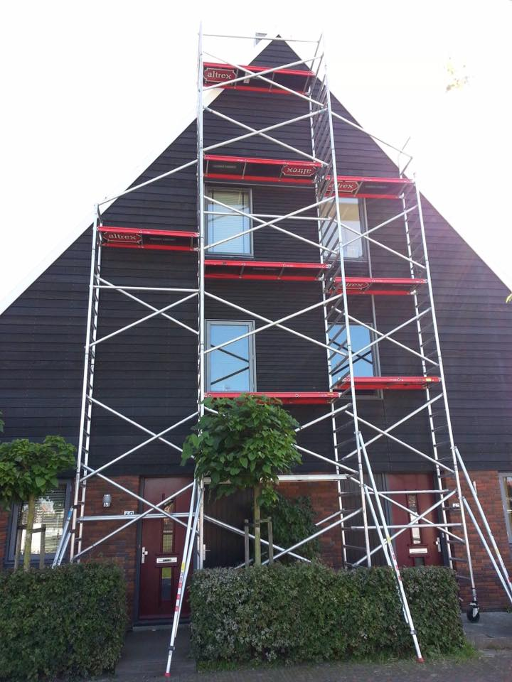
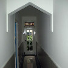
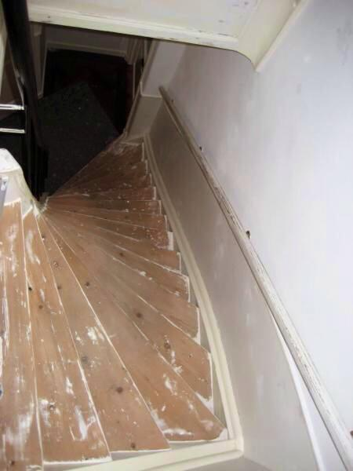
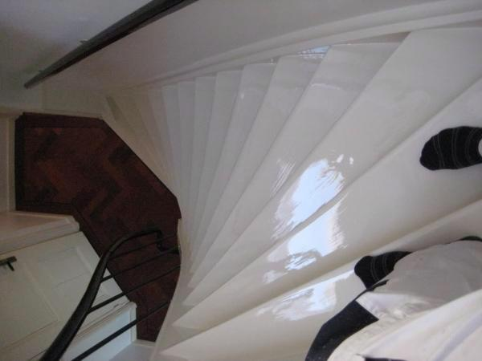
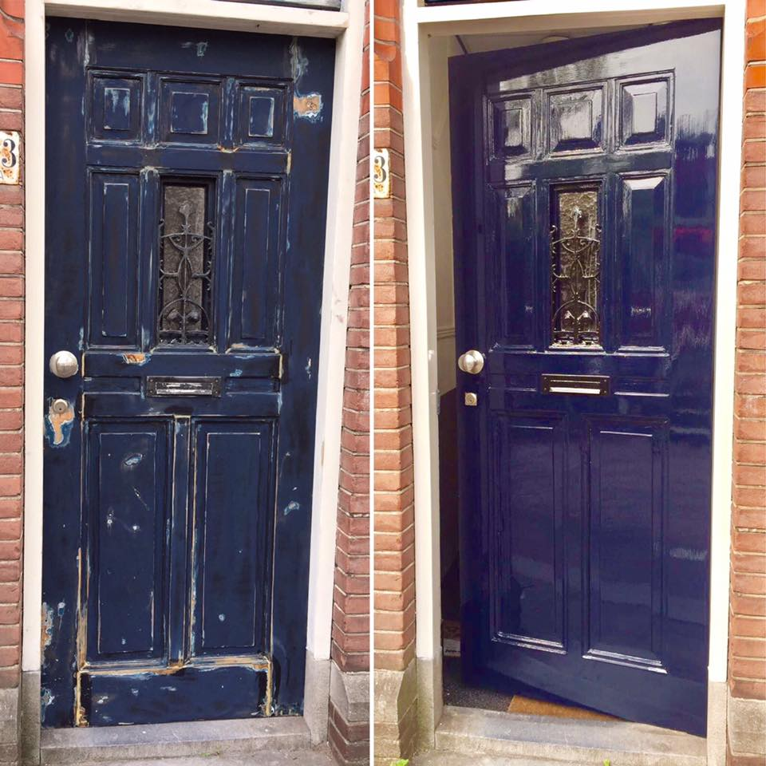

Vakkundig schilderwerk voor elk project — particulier of bedrijf, binnen of buiten, renovatie of nieuwbouw.

BuitenwerkBij buitenschilderwerk kunt u kiezen uit verschillende verfsystemen, elk met eigen eigenschappen. In de meeste gevallen wordt hoogglans gekozen vanwege de duurzaamheid — maar Jeffrie adviseert u ter plekke over wat het beste bij uw situatie past.
Heeft u een badkamerraam of een woning met enkel glas, dan kan vocht van binnenuit het hout aantasten. In zulke gevallen is EPS of beits de betere keuze, omdat dit het vocht de ruimte geeft om te ontsnappen. Dit geldt ook bij renovatie van verouderd buitenhoutwerk.

BinnenwerkBij binnenschilderwerk is het van essentieel belang dat de schilder extra secuur en netjes werkt. Daarom maakt J.J. Gieze Schilderwerk gebruik van een professioneel schuurapparaat met stof-afzuigsysteem — zodat er geen fijn stof vrijkomt tijdens de werkzaamheden.
Muren, plafonds en houtwerk worden zorgvuldig behandeld. Meubels en vloeren worden volledig afgedekt, zodat uw woning na afloop even schoon is als ervoor. Ook renovatie van bestaand binnenwerk — verweerde interieurs, gangen of woonruimtes — behoort tot de specialiteit.

Vóór
NaTrappenhuizen en gemeenschappelijke ruimtes vergen een specifieke aanpak. De foto's hiernaast tonen het resultaat — van een verouderd, versleten trappenhuis naar een frisse, verzorgde uitstraling.
Of het nu gaat om een appartementencomplex of een woonhuis — Jeffrie zorgt voor een vakkundige afwerking die jarenlang mooi blijft. Werkzaamheden worden schoon en stofvrij uitgevoerd, met minimale overlast voor bewoners.

Veranda & HoutwerkEen nieuw geschilderde voordeur of kozijn geeft uw woning direct een frisse uitstraling. Houtwerk is gevoelig voor weersinvloeden en vraagt om de juiste behandeling met kwalitatieve verf en grondige voorbereiding.
Houten veranda's, schuren en bijgebouwen zijn eveneens kwetsbaar voor weersinvloeden. Door regelmatig onderhoud en de juiste beschermlaag behoudt u de kwaliteit en levensduur van uw buitenhoutwerk. Jeffrie adviseert u ter plekke over het beste verfsysteem.